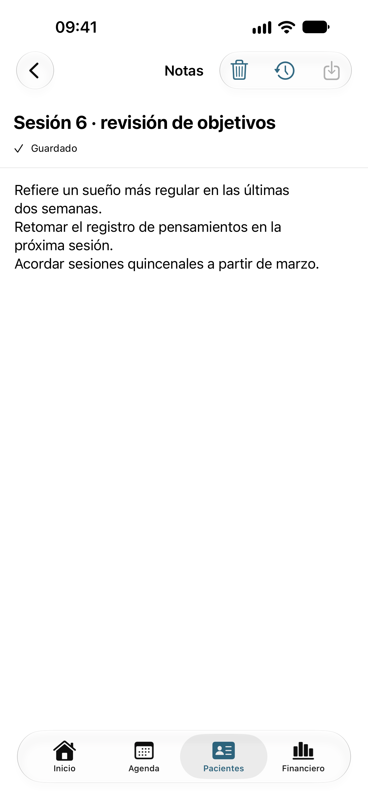

Una agenda pensada para sesiones recurrentes
- Vista por día, semana y mes.
- Sesiones semanales, quincenales o mensuales, o series sin fecha de fin.
- Calendario y recordatorios sin nombres de pacientes, salvo que lo permitas.

Agenda, pacientes, notas clínicas y cobros en una sola app. Tus datos se quedan en tu dispositivo, y iCloud es opcional.

Cuatro áreas que acompañan cada sesión, de la cita al pago.



Funciona con Siri, Atajos, Calendario e iCloud.
25 segundos, con datos ficticios.
Las funciones mostradas requieren suscripción.
Tu rutina, en un solo lugar. Consulta tu agenda con claridad. Encuentra a cada paciente. Ten su contexto a mano. Lleva el control de tus cobros. Las funciones mostradas requieren una suscripción. La grabación utiliza datos ficticios.
Por defecto, todo se queda en tu dispositivo. Para usarla en iPhone y Mac, activa iCloud: los datos van al área privada de tu cuenta de Apple y el equipo de PsiControle no puede leerlos.
Crear y editar registros requiere un periodo de prueba o una suscripción contratada en la App Store. Cuando hay prueba gratuita, su duración se muestra antes de la compra. Si el acceso termina, la app puede mantener tus datos disponibles para consultarlos y exportarlos.
En tu dispositivo. No se envía nada a servidores de PsiControle. Si activas iCloud, los datos también se guardan en el área privada de tu cuenta de Apple, que el equipo no puede leer.
Sí. Activa iCloud con la misma cuenta de Apple en ambos dispositivos para ver agenda, pacientes, notas y cobros en los dos.
Sí. Sigues usando tus datos en el dispositivo. Con iCloud activado, los cambios se envían cuando vuelve la conexión.
Sí, con un archivo CSV. Se lee en tu dispositivo e incluye nombre, contacto, estado del registro, documento y dirección.
No, salvo que lo permitas. Por defecto, los eventos y las notificaciones usan texto neutro, sin nombre, teléfono ni notas.